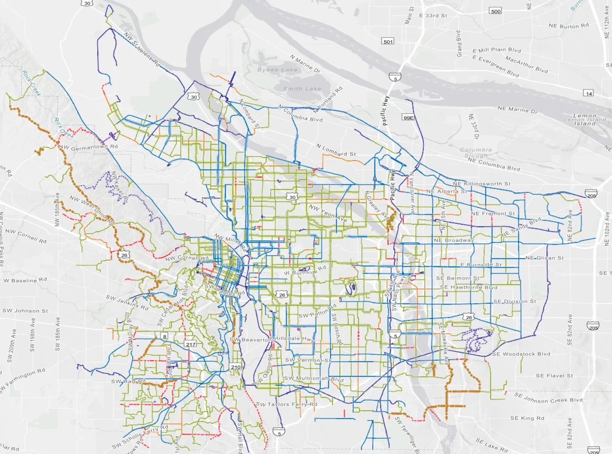
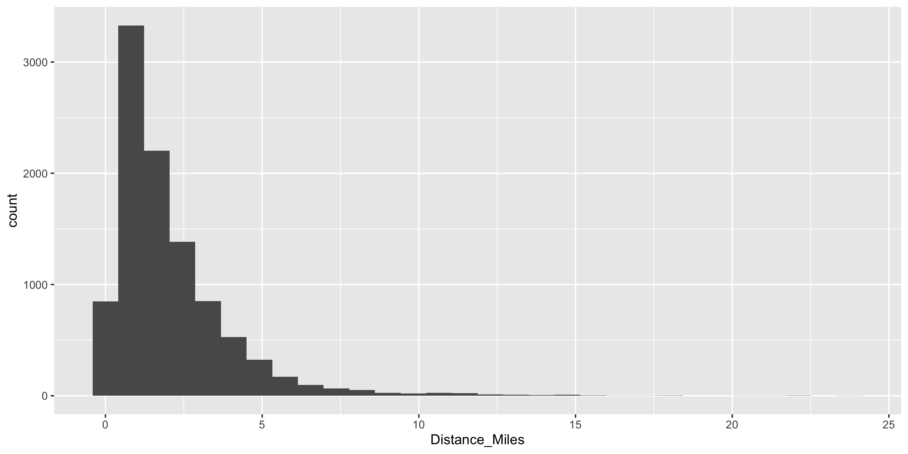
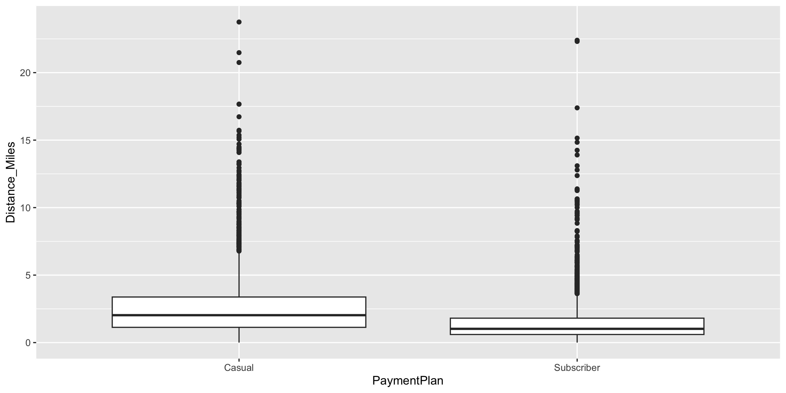
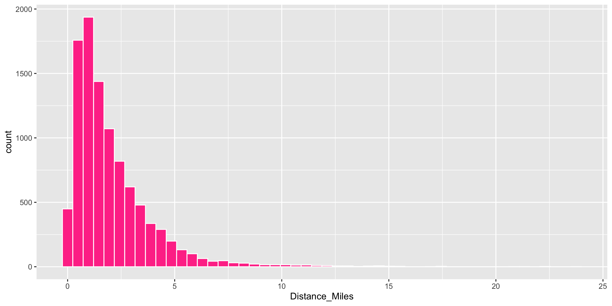
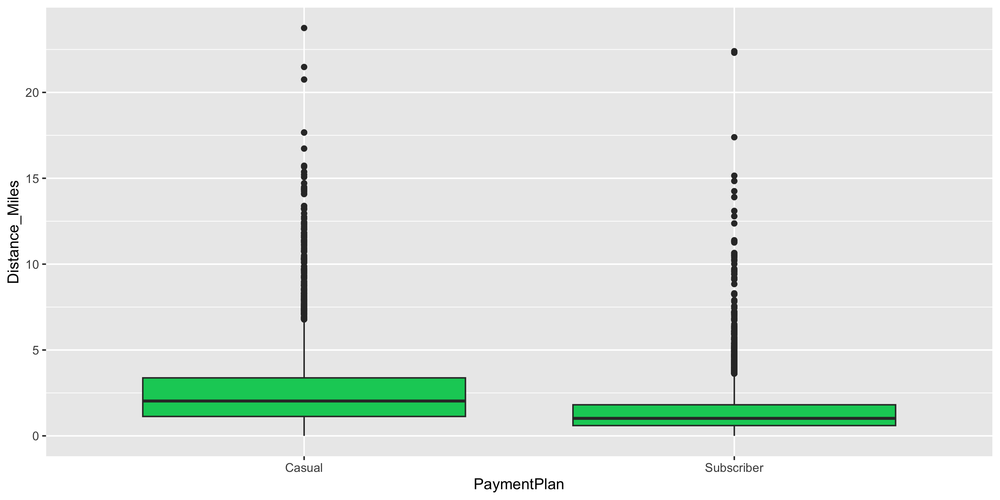
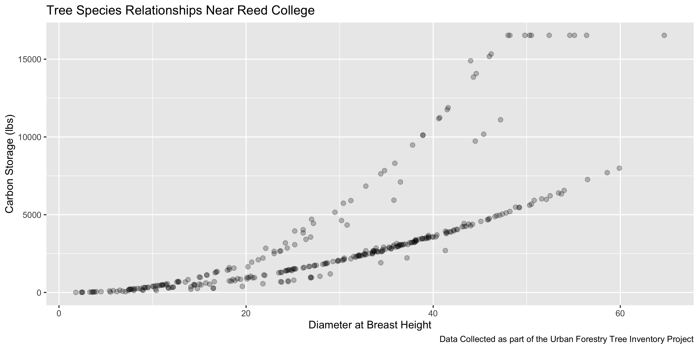
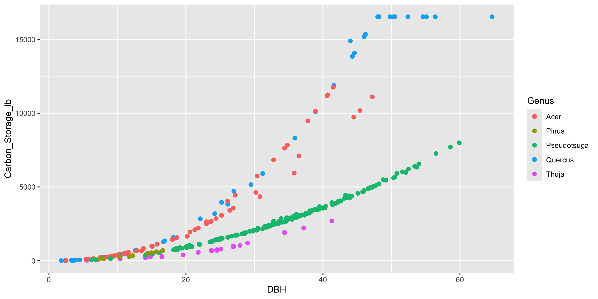
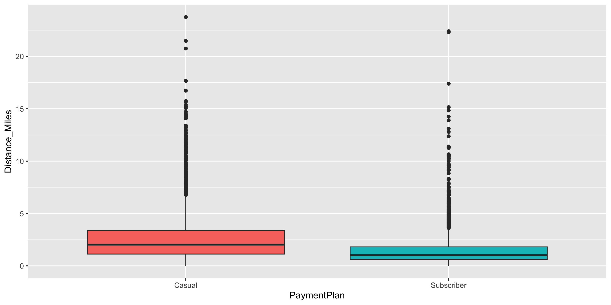

Data Visualization: the 5 Named Graphs with ggplot2
Megan Ayers
Math 141 | Spring 2026
Friday, Week 1
Reminders/Announcements
- If you plan to request academic accommodations, please submit these through the DAR student portal
- Course assistant office hours are now on Moodle
- The DataLab @ Reed
Last Time
- Data frames
- Motivation for data visualizations
- “Grammar” of graphics and good graphical practices
Goals for Today
- Recall our motivation for good graphics
- Learn the general structure of
ggplot2 - Learn five standard graphs for numerical/quantitative data:
- Histogram: one numerical variable
- Boxplot: one numerical variable
- Barplot: one numerical variable and at least one categorical variable
- Scatterplot and Linegraph: two numerical variables
Load Necessary Packages

ggplot2 is part of this collection of data science packages.
Data Setting: Portland Bikeshare Data

Import the Data
Rows: 9,999
Columns: 19
$ RouteID <dbl> 4074085, 3719219, 3789757, 3576798, 3459987, 3947695,…
$ PaymentPlan <chr> "Subscriber", "Casual", "Casual", "Subscriber", "Casu…
$ StartHub <chr> "SE Elliott at Division", "SW Yamhill at Director Par…
$ StartLatitude <dbl> 45.50513, 45.51898, 45.52990, 45.52389, 45.53028, 45.…
$ StartLongitude <dbl> -122.6534, -122.6813, -122.6628, -122.6722, -122.6547…
$ StartDate <chr> "8/17/2017", "7/22/2017", "7/27/2017", "7/12/2017", "…
$ StartTime <time> 10:44:00, 14:49:00, 14:13:00, 13:23:00, 19:30:00, 10…
$ EndHub <chr> "Blues Fest - SW Waterfront at Clay - Disabled", "SW …
$ EndLatitude <dbl> 45.51287, 45.52142, 45.55902, 45.53409, 45.52990, 45.…
$ EndLongitude <dbl> -122.6749, -122.6726, -122.6355, -122.6949, -122.6628…
$ EndDate <chr> "8/17/2017", "7/22/2017", "7/27/2017", "7/12/2017", "…
$ EndTime <time> 10:56:00, 15:00:00, 14:42:00, 13:38:00, 20:30:00, 10…
$ TripType <lgl> NA, NA, NA, NA, NA, NA, NA, NA, NA, NA, NA, NA, NA, N…
$ BikeID <dbl> 6163, 6843, 6409, 7375, 6354, 6088, 6089, 5988, 6857,…
$ BikeName <chr> "0488 BIKETOWN", "0759 BIKETOWN", "0614 BIKETOWN", "0…
$ Distance_Miles <dbl> 1.91, 0.72, 3.42, 1.81, 4.51, 5.54, 1.59, 1.03, 0.70,…
$ Duration <dbl> 11.500, 11.383, 28.317, 14.917, 60.517, 53.783, 23.86…
$ RentalAccessPath <chr> "keypad", "keypad", "keypad", "keypad", "keypad", "ke…
$ MultipleRental <lgl> FALSE, FALSE, FALSE, FALSE, TRUE, FALSE, FALSE, FALSE…Inspect the Data
# A tibble: 6 × 19
RouteID PaymentPlan StartHub StartLatitude StartLongitude StartDate StartTime
<dbl> <chr> <chr> <dbl> <dbl> <chr> <time>
1 4074085 Subscriber SE Ellio… 45.5 -123. 8/17/2017 10:44
2 3719219 Casual SW Yamhi… 45.5 -123. 7/22/2017 14:49
3 3789757 Casual NE Holla… 45.5 -123. 7/27/2017 14:13
4 3576798 Subscriber NW Couch… 45.5 -123. 7/12/2017 13:23
5 3459987 Casual NE 11th … 45.5 -123. 7/3/2017 19:30
6 3947695 Casual SW Moody… 45.5 -123. 8/8/2017 10:01
# ℹ 12 more variables: EndHub <chr>, EndLatitude <dbl>, EndLongitude <dbl>,
# EndDate <chr>, EndTime <time>, TripType <lgl>, BikeID <dbl>,
# BikeName <chr>, Distance_Miles <dbl>, Duration <dbl>,
# RentalAccessPath <chr>, MultipleRental <lgl>What does a row represent here?
Inspect the Data
Grammar of Graphics
- data: Data frame that contains the raw data
- Variables used in the graph
- geom: Geometric shape that the data are mapped to.
- EX: Point, line, bar, text, …
- aesthetic: Visual properties of the geom
- EX: X (horizontal) position, y (vertical) position, color, fill, shape
- scale: Controls how data are mapped to the visual values of the aesthetic.
- EX: particular colors, log scale
- guide: Legend/key to help user convert visual display back to the data
ggplot2 example code
Guiding Principle: We will map variables from the data to the aesthetic attributes (e.g. location, size, shape, color) of geometric objects (e.g. points, lines, bars).
- There are other layers, such as
scale_---_---()andlabs(), but we will wait on those.
- We are about to touch on many details of graphs - focus on recognizing this general pattern, revisit the slides to refresh on the coding specifics
Histograms
Binned counts of data.
Great for assessing data distribution and shape.
Question: are histograms used for quantitative or categorical variables?
Answer: Quantitative.

Data Shapes

Histograms

Histograms

- mapping to a variable goes in
aes() - setting to a specific value goes in the
geom_---() - Does the right tail of this distribution make sense?
Boxplots
- Five number summary:
- Minimum
- First quartile (Q1)
- Median
- Third quartile (Q3)
- Maximum
- Interquartile range (IQR) \(=\) Q3 \(-\) Q1
- Outliers: unusual points
- Boxplot defines unusual as being beyond \(1.5*IQR\) from \(Q1\) or \(Q3\).
- Whiskers: reach out to the furthest point that is NOT an outlier

Boxplots
Boxplots

- Is this
fillanaesthetic mapping?
Boxplots

Is this
fillanaesthetic mapping?What variable is mapped to
fill?
Boxplots

Barplots
- Boxplots and histograms show the overall distribution of quantitative variables
- Barplots show the distribution of quantitative variables within distinct levels defined by a categorical variable
Barplots
- Barplots can also show the joint distribution of two categorical variables via the color or fill aesthetic.
- Here, each bar is divided into separate counts with respect to the
Payment Planvariable.
Barplots

- Alternatively, we can consider the y-axis to represent proportion, making direct comparison easier.
New Data Context: pdxTrees
- The
pdxTreesR package contains data on all the trees in the Portland Metro Area. - Today, we’ll look at the Maple, Oak, Pine, Cedar, and Douglas-fir trees in a few parks near Reed.
- Let’s load the data
New Data Context: pdxTrees
- The
pdxTreesR package contains data on all the trees in the Portland Metro Area. - Today, we’ll look at the Maple, Oak, Pine, Cedar, and Douglas-fir trees in a few parks near Reed.
- Let’s load the data
- Don’t worry, we haven’t learned the below code yet.
Inspect the data
Rows: 323
Columns: 34
$ Longitude <dbl> -122.6304, -122.6301, -122.6301, -122.6299,…
$ Latitude <dbl> 45.49201, 45.49080, 45.49081, 45.49094, 45.…
$ UserID <chr> "7670", "7671", "7672", "7902", "7903", "79…
$ Genus <chr> "Quercus", "Pseudotsuga", "Pseudotsuga", "Q…
$ Family <chr> "Fagaceae", "Pinaceae", "Pinaceae", "Fagace…
$ DBH <dbl> 3.3, 43.1, 48.2, 2.4, 11.7, 33.5, 23.5, 37.…
$ Inventory_Date <dttm> 2018-07-26, 2018-07-26, 2018-07-26, 2018-0…
$ Species <chr> "QURU", "PSME", "PSME", "QURU", "PSME", "PS…
$ Common_Name <chr> "Northern Red Oak", "Douglas-Fir", "Douglas…
$ Condition <chr> "Fair", "Fair", "Fair", "Fair", "Good", "Fa…
$ Tree_Height <dbl> 16, 148, 148, 16, 64, 118, 121, 105, 24, 12…
$ Crown_Width_NS <dbl> 14, 61, 52, 9, 29, 32, 37, 43, 38, 44, 31, …
$ Crown_Width_EW <dbl> 10, 43, 48, 14, 32, 50, 31, 44, 35, 36, 33,…
$ Crown_Base_Height <dbl> 5, 6, 7, 2, 3, 60, 27, 10, 5, 19, 17, 6, 5,…
$ Collected_By <chr> "Staff", "Staff", "Staff", "Staff", "Staff"…
$ Park <chr> "Kenilworth Park", "Kenilworth Park", "Keni…
$ Scientific_Name <chr> "Quercus rubra", "Pseudotsuga menziesii", "…
$ Functional_Type <chr> "BD", "CE", "CE", "BD", "CE", "CE", "CE", "…
$ Mature_Size <fct> L, L, L, L, L, L, L, L, S, L, L, L, L, L, L…
$ Native <chr> "No", "Yes", "Yes", "No", "Yes", "Yes", "Ye…
$ Edible <chr> NA, NA, NA, NA, NA, NA, NA, NA, NA, NA, NA,…
$ Nuisance <chr> NA, NA, NA, NA, NA, NA, NA, NA, NA, NA, NA,…
$ Structural_Value <dbl> 288.80, 12462.74, 14395.22, 143.21, 1348.26…
$ Carbon_Storage_lb <dbl> 25.2, 4221.2, 5206.7, 11.6, 285.3, 2513.2, …
$ Carbon_Storage_value <dbl> 1.63, 273.80, 337.73, 0.75, 18.51, 163.01, …
$ Carbon_Sequestration_lb <dbl> 3.7, 43.5, 49.8, 2.4, 9.6, 32.4, 21.4, 37.4…
$ Carbon_Sequestration_value <dbl> 0.24, 2.82, 3.23, 0.15, 0.62, 2.10, 1.39, 2…
$ Stormwater_ft <dbl> 5.2, 157.1, 145.2, 4.7, 56.8, 73.3, 68.1, 1…
$ Stormwater_value <dbl> 0.35, 10.50, 9.71, 0.31, 3.80, 4.90, 4.55, …
$ Pollution_Removal_value <dbl> 0.63, 19.08, 17.64, 0.57, 6.90, 8.90, 8.27,…
$ Pollution_Removal_oz <dbl> 1.4, 42.3, 39.1, 1.3, 15.3, 19.7, 18.3, 30.…
$ Total_Annual_Services <dbl> 1.21, 32.40, 30.58, 1.04, 11.31, 15.90, 14.…
$ Origin <chr> "North America - eastern Canada and eastern…
$ Species_Factoid <chr> "Acorns take two years to mature and are an…Inspect the data
# A tibble: 6 × 34
Longitude Latitude UserID Genus Family DBH Inventory_Date Species
<dbl> <dbl> <chr> <chr> <chr> <dbl> <dttm> <chr>
1 -123. 45.5 7670 Quercus Fagac… 3.3 2018-07-26 00:00:00 QURU
2 -123. 45.5 7671 Pseudotsuga Pinac… 43.1 2018-07-26 00:00:00 PSME
3 -123. 45.5 7672 Pseudotsuga Pinac… 48.2 2018-07-26 00:00:00 PSME
4 -123. 45.5 7902 Quercus Fagac… 2.4 2018-07-26 00:00:00 QURU
5 -123. 45.5 7903 Pseudotsuga Pinac… 11.7 2018-07-26 00:00:00 PSME
6 -123. 45.5 7905 Pseudotsuga Pinac… 33.5 2018-07-26 00:00:00 PSME
# ℹ 26 more variables: Common_Name <chr>, Condition <chr>, Tree_Height <dbl>,
# Crown_Width_NS <dbl>, Crown_Width_EW <dbl>, Crown_Base_Height <dbl>,
# Collected_By <chr>, Park <chr>, Scientific_Name <chr>,
# Functional_Type <chr>, Mature_Size <fct>, Native <chr>, Edible <chr>,
# Nuisance <chr>, Structural_Value <dbl>, Carbon_Storage_lb <dbl>,
# Carbon_Storage_value <dbl>, Carbon_Sequestration_lb <dbl>,
# Carbon_Sequestration_value <dbl>, Stormwater_ft <dbl>, …What does a row represent here?
Scatterplots
- Explore relationships between numerical variables.
- We will be especially interested in linear relationships.
Scatterplots

- Fix over-plotting (using alpha)
- What’s going on in this graph?
Scatterplots
ggplot(data = near_Reed,
mapping = aes(x = DBH,
y = Carbon_Storage_lb)) +
geom_point(size = 2, alpha = 0.25) +
labs(x = "Diameter at Breast Height",
y = "Carbon Storage (lbs)",
caption = "Data Collected as part of the Urban Forestry Tree Inventory Project",
title = "Tree Species Relationships Near Reed College")
- Fix over-plotting (using alpha)
- What’s going on in this graph? (labels help add context)
Scatterplots
Linegraphs
Linegraphs

Linegraphs vs scatterplots


- Which do you prefer?
- Does it depend on context?
A speedy peek at advanced techniques!
If we run out of time, we’ll pick this back up during lab next Thursday.
Faceting

- Faceting is used to split one graphic into several smaller ones, based on the values of a categorical variable
Customizing your ggplot2 Plots
There are so many ways you can customize the look of your
ggplot2plotsLet’s look quickly at some common changes:
- Fussing with labels
- Zooming in
- Using multiple
geoms - Color!
- Themes
Fussing with Labels: Rotate
Zooming In
Zooming In
Multiple geoms
Multiple geoms
Change the Color
[1] "white" "aliceblue" "antiquewhite"
[4] "antiquewhite1" "antiquewhite2" "antiquewhite3"
[7] "antiquewhite4" "aquamarine" "aquamarine1"
[10] "aquamarine2" "aquamarine3" "aquamarine4"
[13] "azure" "azure1" "azure2"
[16] "azure3" "azure4" "beige"
[19] "bisque" "bisque1" "bisque2"
[22] "bisque3" "bisque4" "black"
[25] "blanchedalmond" "blue" "blue1"
[28] "blue2" "blue3" "blue4"
[31] "blueviolet" "brown" "brown1"
[34] "brown2" "brown3" "brown4"
[37] "burlywood" "burlywood1" "burlywood2"
[40] "burlywood3" "burlywood4" "cadetblue"
[43] "cadetblue1" "cadetblue2" "cadetblue3"
[46] "cadetblue4" "chartreuse" "chartreuse1"
[49] "chartreuse2" "chartreuse3" "chartreuse4"
[52] "chocolate" "chocolate1" "chocolate2"
[55] "chocolate3" "chocolate4" "coral"
[58] "coral1" "coral2" "coral3"
[61] "coral4" "cornflowerblue" "cornsilk"
[64] "cornsilk1" "cornsilk2" "cornsilk3"
[67] "cornsilk4" "cyan" "cyan1"
[70] "cyan2" "cyan3" "cyan4"
[73] "darkblue" "darkcyan" "darkgoldenrod"
[76] "darkgoldenrod1" "darkgoldenrod2" "darkgoldenrod3"
[79] "darkgoldenrod4" "darkgray" "darkgreen"
[82] "darkgrey" "darkkhaki" "darkmagenta"
[85] "darkolivegreen" "darkolivegreen1" "darkolivegreen2"
[88] "darkolivegreen3" "darkolivegreen4" "darkorange"
[91] "darkorange1" "darkorange2" "darkorange3"
[94] "darkorange4" "darkorchid" "darkorchid1"
[97] "darkorchid2" "darkorchid3" "darkorchid4"
[100] "darkred" "darksalmon" "darkseagreen"
[103] "darkseagreen1" "darkseagreen2" "darkseagreen3"
[106] "darkseagreen4" "darkslateblue" "darkslategray"
[109] "darkslategray1" "darkslategray2" "darkslategray3"
[112] "darkslategray4" "darkslategrey" "darkturquoise"
[115] "darkviolet" "deeppink" "deeppink1"
[118] "deeppink2" "deeppink3" "deeppink4"
[121] "deepskyblue" "deepskyblue1" "deepskyblue2"
[124] "deepskyblue3" "deepskyblue4" "dimgray"
[127] "dimgrey" "dodgerblue" "dodgerblue1"
[130] "dodgerblue2" "dodgerblue3" "dodgerblue4"
[133] "firebrick" "firebrick1" "firebrick2"
[136] "firebrick3" "firebrick4" "floralwhite"
[139] "forestgreen" "gainsboro" "ghostwhite"
[142] "gold" "gold1" "gold2"
[145] "gold3" "gold4" "goldenrod"
[148] "goldenrod1" "goldenrod2" "goldenrod3"
[151] "goldenrod4" "gray" "gray0"
[154] "gray1" "gray2" "gray3"
[157] "gray4" "gray5" "gray6"
[160] "gray7" "gray8" "gray9"
[163] "gray10" "gray11" "gray12"
[166] "gray13" "gray14" "gray15"
[169] "gray16" "gray17" "gray18"
[172] "gray19" "gray20" "gray21"
[175] "gray22" "gray23" "gray24"
[178] "gray25" "gray26" "gray27"
[181] "gray28" "gray29" "gray30"
[184] "gray31" "gray32" "gray33"
[187] "gray34" "gray35" "gray36"
[190] "gray37" "gray38" "gray39"
[193] "gray40" "gray41" "gray42"
[196] "gray43" "gray44" "gray45"
[199] "gray46" "gray47" "gray48"
[202] "gray49" "gray50" "gray51"
[205] "gray52" "gray53" "gray54"
[208] "gray55" "gray56" "gray57"
[211] "gray58" "gray59" "gray60"
[214] "gray61" "gray62" "gray63"
[217] "gray64" "gray65" "gray66"
[220] "gray67" "gray68" "gray69"
[223] "gray70" "gray71" "gray72"
[226] "gray73" "gray74" "gray75"
[229] "gray76" "gray77" "gray78"
[232] "gray79" "gray80" "gray81"
[235] "gray82" "gray83" "gray84"
[238] "gray85" "gray86" "gray87"
[241] "gray88" "gray89" "gray90"
[244] "gray91" "gray92" "gray93"
[247] "gray94" "gray95" "gray96"
[250] "gray97" "gray98" "gray99"
[253] "gray100" "green" "green1"
[256] "green2" "green3" "green4"
[259] "greenyellow" "grey" "grey0"
[262] "grey1" "grey2" "grey3"
[265] "grey4" "grey5" "grey6"
[268] "grey7" "grey8" "grey9"
[271] "grey10" "grey11" "grey12"
[274] "grey13" "grey14" "grey15"
[277] "grey16" "grey17" "grey18"
[280] "grey19" "grey20" "grey21"
[283] "grey22" "grey23" "grey24"
[286] "grey25" "grey26" "grey27"
[289] "grey28" "grey29" "grey30"
[292] "grey31" "grey32" "grey33"
[295] "grey34" "grey35" "grey36"
[298] "grey37" "grey38" "grey39"
[301] "grey40" "grey41" "grey42"
[304] "grey43" "grey44" "grey45"
[307] "grey46" "grey47" "grey48"
[310] "grey49" "grey50" "grey51"
[313] "grey52" "grey53" "grey54"
[316] "grey55" "grey56" "grey57"
[319] "grey58" "grey59" "grey60"
[322] "grey61" "grey62" "grey63"
[325] "grey64" "grey65" "grey66"
[328] "grey67" "grey68" "grey69"
[331] "grey70" "grey71" "grey72"
[334] "grey73" "grey74" "grey75"
[337] "grey76" "grey77" "grey78"
[340] "grey79" "grey80" "grey81"
[343] "grey82" "grey83" "grey84"
[346] "grey85" "grey86" "grey87"
[349] "grey88" "grey89" "grey90"
[352] "grey91" "grey92" "grey93"
[355] "grey94" "grey95" "grey96"
[358] "grey97" "grey98" "grey99"
[361] "grey100" "honeydew" "honeydew1"
[364] "honeydew2" "honeydew3" "honeydew4"
[367] "hotpink" "hotpink1" "hotpink2"
[370] "hotpink3" "hotpink4" "indianred"
[373] "indianred1" "indianred2" "indianred3"
[376] "indianred4" "ivory" "ivory1"
[379] "ivory2" "ivory3" "ivory4"
[382] "khaki" "khaki1" "khaki2"
[385] "khaki3" "khaki4" "lavender"
[388] "lavenderblush" "lavenderblush1" "lavenderblush2"
[391] "lavenderblush3" "lavenderblush4" "lawngreen"
[394] "lemonchiffon" "lemonchiffon1" "lemonchiffon2"
[397] "lemonchiffon3" "lemonchiffon4" "lightblue"
[400] "lightblue1" "lightblue2" "lightblue3"
[403] "lightblue4" "lightcoral" "lightcyan"
[406] "lightcyan1" "lightcyan2" "lightcyan3"
[409] "lightcyan4" "lightgoldenrod" "lightgoldenrod1"
[412] "lightgoldenrod2" "lightgoldenrod3" "lightgoldenrod4"
[415] "lightgoldenrodyellow" "lightgray" "lightgreen"
[418] "lightgrey" "lightpink" "lightpink1"
[421] "lightpink2" "lightpink3" "lightpink4"
[424] "lightsalmon" "lightsalmon1" "lightsalmon2"
[427] "lightsalmon3" "lightsalmon4" "lightseagreen"
[430] "lightskyblue" "lightskyblue1" "lightskyblue2"
[433] "lightskyblue3" "lightskyblue4" "lightslateblue"
[436] "lightslategray" "lightslategrey" "lightsteelblue"
[439] "lightsteelblue1" "lightsteelblue2" "lightsteelblue3"
[442] "lightsteelblue4" "lightyellow" "lightyellow1"
[445] "lightyellow2" "lightyellow3" "lightyellow4"
[448] "limegreen" "linen" "magenta"
[451] "magenta1" "magenta2" "magenta3"
[454] "magenta4" "maroon" "maroon1"
[457] "maroon2" "maroon3" "maroon4"
[460] "mediumaquamarine" "mediumblue" "mediumorchid"
[463] "mediumorchid1" "mediumorchid2" "mediumorchid3"
[466] "mediumorchid4" "mediumpurple" "mediumpurple1"
[469] "mediumpurple2" "mediumpurple3" "mediumpurple4"
[472] "mediumseagreen" "mediumslateblue" "mediumspringgreen"
[475] "mediumturquoise" "mediumvioletred" "midnightblue"
[478] "mintcream" "mistyrose" "mistyrose1"
[481] "mistyrose2" "mistyrose3" "mistyrose4"
[484] "moccasin" "navajowhite" "navajowhite1"
[487] "navajowhite2" "navajowhite3" "navajowhite4"
[490] "navy" "navyblue" "oldlace"
[493] "olivedrab" "olivedrab1" "olivedrab2"
[496] "olivedrab3" "olivedrab4" "orange"
[499] "orange1" "orange2" "orange3"
[502] "orange4" "orangered" "orangered1"
[505] "orangered2" "orangered3" "orangered4"
[508] "orchid" "orchid1" "orchid2"
[511] "orchid3" "orchid4" "palegoldenrod"
[514] "palegreen" "palegreen1" "palegreen2"
[517] "palegreen3" "palegreen4" "paleturquoise"
[520] "paleturquoise1" "paleturquoise2" "paleturquoise3"
[523] "paleturquoise4" "palevioletred" "palevioletred1"
[526] "palevioletred2" "palevioletred3" "palevioletred4"
[529] "papayawhip" "peachpuff" "peachpuff1"
[532] "peachpuff2" "peachpuff3" "peachpuff4"
[535] "peru" "pink" "pink1"
[538] "pink2" "pink3" "pink4"
[541] "plum" "plum1" "plum2"
[544] "plum3" "plum4" "powderblue"
[547] "purple" "purple1" "purple2"
[550] "purple3" "purple4" "red"
[553] "red1" "red2" "red3"
[556] "red4" "rosybrown" "rosybrown1"
[559] "rosybrown2" "rosybrown3" "rosybrown4"
[562] "royalblue" "royalblue1" "royalblue2"
[565] "royalblue3" "royalblue4" "saddlebrown"
[568] "salmon" "salmon1" "salmon2"
[571] "salmon3" "salmon4" "sandybrown"
[574] "seagreen" "seagreen1" "seagreen2"
[577] "seagreen3" "seagreen4" "seashell"
[580] "seashell1" "seashell2" "seashell3"
[583] "seashell4" "sienna" "sienna1"
[586] "sienna2" "sienna3" "sienna4"
[589] "skyblue" "skyblue1" "skyblue2"
[592] "skyblue3" "skyblue4" "slateblue"
[595] "slateblue1" "slateblue2" "slateblue3"
[598] "slateblue4" "slategray" "slategray1"
[601] "slategray2" "slategray3" "slategray4"
[604] "slategrey" "snow" "snow1"
[607] "snow2" "snow3" "snow4"
[610] "springgreen" "springgreen1" "springgreen2"
[613] "springgreen3" "springgreen4" "steelblue"
[616] "steelblue1" "steelblue2" "steelblue3"
[619] "steelblue4" "tan" "tan1"
[622] "tan2" "tan3" "tan4"
[625] "thistle" "thistle1" "thistle2"
[628] "thistle3" "thistle4" "tomato"
[631] "tomato1" "tomato2" "tomato3"
[634] "tomato4" "turquoise" "turquoise1"
[637] "turquoise2" "turquoise3" "turquoise4"
[640] "violet" "violetred" "violetred1"
[643] "violetred2" "violetred3" "violetred4"
[646] "wheat" "wheat1" "wheat2"
[649] "wheat3" "wheat4" "whitesmoke"
[652] "yellow" "yellow1" "yellow2"
[655] "yellow3" "yellow4" "yellowgreen" Change the Color
Use a Different Theme

Recap: ggplot2
- This is the major concept to remember
- We covered a lot of ground - it takes lots of practice to become fluent in the details!
Next time:
- Data wrangling!